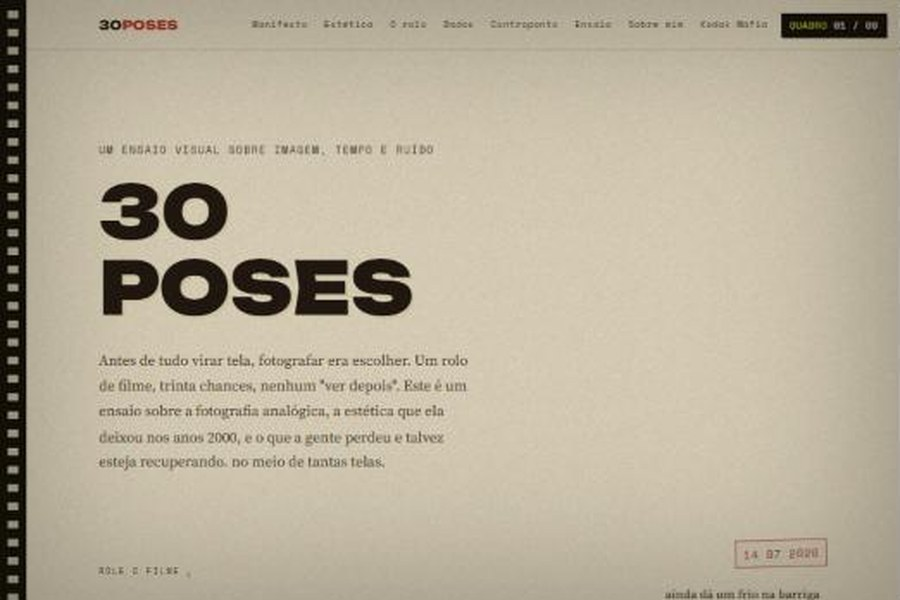

01
30 Poses
HTML · CSS · JavaScript — publicado na Vercel
Ensaio visual sobre fotografia analógica em página única: nove "quadros" que comparam as trinta chances de um rolo de filme com o excesso de telas de hoje. Grão de filme, trilho de filmstrip 35mm e contato com 23 fotos minhas, tudo construído do zero.
- Quando
- julho de 2026
- Desafio
- fazer e publicar sozinha, do design à correção de bugs de layout e de caminhos de imagem
- Destaque técnico
- contador de quadro com
IntersectionObservere perfurações do filme recalculadas a cada redimensionamento
